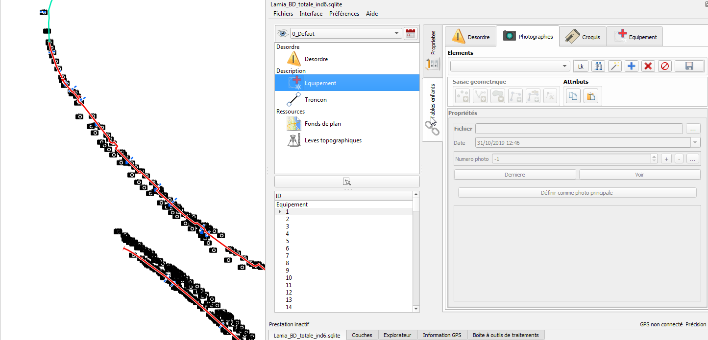

Tutoriel¶
Installation¶
Prérequis : Librairies osgeo nécessaires¶
LAMIA est un module complémentaire pour Qgis 2.18 et supérieures se manifestant sous la forme d’un panneau supplémentaire dans l’application.
Il s’agit donc dans un premier temps d’installer QGis 2.18.
Pour windows, nous vous recommendons l’installateur osgeo4w. Cette installateur permet également l’installation des libraiies compélmentaires à QGIs permettant le fonctionnement de Lamia.
Sous linux, une installation via apt-get est recommendée.
Pour installer LAMIA, les bibliothèques suivantes sont nécessaires :
pyqgis
Numpy
Matplotlib
Networkx
Xlrd (excel reader)
Pillow
Ces librairies sont installables à partir de l’installateur osgeo4w pour windows.
Lancement de Lamia¶
Si vous disposez de toutes ces bibliothèques et que le python que Qgis utilise y a bien accès, il vous suffit d’ajouter LAMIA au dossier des extensions Qgis pour pouvoir commencer à l’utiliser.
Vous pouvez aussi télécharger LAMIA directement depuis le dépôt des extensions officielles Qgis.
La base de données¶
{kind=link}
L’organisation générale¶
Le schéma ci-dessus montre l’architecture générale de la base de données. On retrouve quatre grands groupes de tables.
Les tables dédiées à la description du patrimoine (en bleu), comprenant les noeuds et les ronçons topologiques, ainsi que des éléments autres;
Les tables servant à poiner vers des ressources diverses (en violet) , telles des photos, des plans, des rapports….
Les tables de gestion, comme le intervenants ou les zones géograpiques (en blanc à gauche);
Les tables liées à l’état et aux interventions sur le réseau (désodre, observation, travaux,..).
La table Objet¶
Lors de la création d’un élément dans un table quelconque, il est créé un élément dans la table objet. Cet élément est renseigné avec une clé primaire, une date de création, une date de version…
Prise en main rapide¶
Cette partie contient le minimum à savoir avant d’utiliser Lamia. Il est fortement conseillé de lire ce paragraphe.
Créer sa première base de données¶
Au lancement de Qgis, la première étape est donc de démarrer LAMIA en cliquant sur l’icône du plugin.
{kind=link}
Un nouveau panneau va s’ouvrir sur la droite de l’écran, qui contiendra le plugin.
{kind=link}
Vous êtes ensuite prêt à créer votre première base de données. Pour cela, rendez-vous dans le menu FICHIERS/NOUVELLE BASE de LAMIA.
Une nouvelle boite de dialogue apparait alors.
{kind=link}
Ici, sélectionnez le type de base de données (par défaut, choisissez une base en spatialite, qui sera créée en local sur votre poste ou votre tablette) et le type de données à rentrer dans la base. Ici nous étudions une base de données Digues.
LAMIA vous demande alors de lui préciser le système de coordonnées qu’elle doit utiliser.
{kind=link}
Nous vous conseillons d’utiliser un système de coordonnées classique. Dans le cas contraire, Qgis peut ne pas réussir à définir proprement les géométries et ne pas être capable de récupérer les informations que vous allez rentrer. Le Lambert 93 ici utilisé est une référence fiable (EPSG :2154)
En spatialite, la boite de dialogue suivante vous demandera de choisir un emplacement où créer la base de données ainsi qu’un nom pour la base.
En Postgis, LAMIA vous demander les à la place les informations de connexion de la base avec laquelle elle doit travailler. Il faudra donc au préalable avoir construit ladite base (par exemple à travers l’interface pgadmin) et y avoir bien ajouté l’extension PostGIS.
LAMIA va alors construire la base de données. Cette étape peut prendre un peu de temps.
Par la suite, pour rouvrir la même base, vous pourrez utiliser le menu FICHIERS/CHARGER BASE et sélectionner la base spatialite précédemment créée ou renseigner les identifiants de la base PostGIS pour reprendre votre travail.
Configurer Lamia¶
Choix de la police d’interface¶
Dès maintenant, nous vous conseillons d’augmenter la police de Qgis. Pour cela, rendez-vous dans le menu PREFERENCES de Qgis.
{kind=link}
Dans ce menu, sélectionner la taille de la police et choisissez une valeur qui vous convient. Nous vous conseillons de commencer par tester une taille 13.
{kind=link}
Vous pouvez également augmenter la taille des icônes pour la faire passer à 36 ou 48.
Cliquez ensuite sur OK pour valider les changements.
Définition du répertoire de photo par défaut¶
En cas d’utilisation de l’appareil photo de la tablette, il est possible de rapatrier automatiquement la dernière photo prise avec l’appareil photo. En revanche, il faut dire à Lamia où se situe le répertoire on son stockées les photos.
Pour ce faire, dans la fenètre Lamia, aller dans Préférences/Répertoire Photo et choisir le répertoire où sont stockées les photos prises avec la tablette.
Utilisation d’un GPS¶
En cas d’utilisation d’un GPS, et après l’avoir correctement configuré (Cf. explications dans les chapitres suivants) pour pouvoir communiuqer avec qgis, la procédure de configuration est la suivante.
aller dans Préférences/Hauteur de perche et saisir la hauteur de la perche GPS.
Dans Qgis, aller dans le menu Vue/Panneau et cliquer sur information GPS. Un panneau apparaîtra permettant de connecter Qgis au GPS. Clicker sur connecter. Le petit rectangle grisé en haut à droite passe au vert lorsque la conenction avec le GPS est établie.
{kind=link}
Dans les menus Lamia, aller dans Préférences/se connecter au GPS pour connecter Lamia au Gps reconnu par Qgis.
Si le GPS est opérationnel, en bas de la fentre Lamia GPS connecté apparaît en vert. Il redevient grisé si Lamia perd le signal GPS.
{kind=link}
Découverte de l’interface¶
Cette interface peut se décomposer en plusieurs parties :
{kind=link}
1. Cartographie QGIS Ce cadre contient l’ensemble des informations géographiques et l’interface SIG classique. Vous pouvez y traiter vos couches Qgis comme dans n’importe quel SIG et y placer directement vos géométries LAMIA par simple clic.
Module LAMIA
Le panneau du plugin LAMIA qui contient l’interface de saisie de données et de consultation des informations de la base.
Menu des objets disponibles
Cette liste vous permet d’accéder aux différentes catégories d’objets disponibles dans votre base. Vous accédez ainsi aux différents types d’éléments pour consulter ceux déjà existants et en créer de nouveaux.
Liste des objets existants
Une fois une catégorie sélectionnée, vous trouvez ici la liste des objets déjà existants dans la base. Sélectionnez-en un ici (ou dans le menu déroulant en haut de la partie 5) pour consulter les informations de cet objet.
Détails de l’objet, interface de saisie de données
Ce panneau affiche les informations sur les objets contenus dans la base. L’affichage dépend de la catégorie et s’adapte à chaque type d’objets pour détailler les différents paramètres. Vous pouvez initialiser ici les paramètres des objets que vous créez, consulter les données déjà existantes et les éditer.
Ce module est souvent décomposé en deux onglets, sur le côté :
L’onglet « Propriétés » qui permet d’afficher les détails propres à l’objet ;
L’onglet « Tables enfants » qui contient toutes les données liées à cet objet comme par exemple :
Les photos prises de l’objet ;
Les croquis de l’objet réalisés ;
Les observations successives effectuées sur un désordre ;
Les points topographiques liés à un relevé topographique ;
Les équipements liés à un autre équipement ;
…
Menu LAMIA
Ce menu permet de paramétrer LAMIA. FICHIER permet de créer une base ou d’en charger une déjà existante. MODE permet de spécifier les catégories d’objets disponibles pour alléger l’interface pour le terrain ou avoir accès à toute les fonctionnalités. PREFERENCES permet de régler quelques paramètres comme la connexion au GPS, le répertoire photo ou encore la date de la visite qui sera associée aux objets créés.
C’est parti : première saisie¶
La logique générale est toujours la même, et est expliquée ici.
Il faut toujours CRÉER/SAISIR LA GÉOMÉTRIE/RENSEIGNER LA FICHE/ENREGISTRER.
Tout d’abord, on choisit le type d’élément à renseigner, p.ex ici un équipement
{kind=link}
Deux onglets apparaissent dans la fenêtre de droite : un onglet « Principal » et « Tables enfants ».
l’onglet « Principal » sert à renseigner les propriétés de l’élément choisi dans la fenêtre de gauche, donc ici de l’équipement
l’onglet « Tables enfants » va servir à renseigner tout les éléments qui peuvent être associés à l’objet choisi dans l’onglet principal.
On va créer un nouvel élement principal.
Il faut sélectionner l’onglet « Principal ».
On va d’abord créer un nouvel objet. Pour cela on utilise la barre d’outil suivante :
{kind=link}
Pour créer un nouvel objet, cliquer sur le 4 (+).
Mais aussi :
Pour enregistrer un objet modifié, cliquer sur le 7 (ATTENTION TOUJOURS PENSER A ENREGISTRER VOS MODIFS!!!)
Le 1 sert à afficher la table des objets liés à l’objet sélectionné dans LAMIA.
Le 2 sert à centrer la carte sur l’objet sélectionné dans LAMIA.
Le 3 est un boutil « magique », permettant de simplifier certaines taches (prise automatique de photo dans un onglet photo par exemple).
Le 5 permet d’archiver ou de supprimer un objet
le 6 permet d’annuler les modifications faites
Ensuite, on va saisir la localisation de l’élément principal à l’aide du panneau en dessous :
{kind=link}
les boutons 1, 2 et 3 servent à créer respectivement un point, une ligne ou un polygone
le bouton 4 sert à rajouter un point à une ligne déjà existante
le bouton 5 sert à saisir un point GPS
le bouton 6 sert à l’édition de la géométrie en cours d’édition (modification de nœud…).
On renseigne la fiche
On sauvegarde !!!
{kind=link}
On va dans l’onglet « tables enfants »
 7. Et on recommence la création/la saisie de la géométrie/la saisie du formulaire/l’enregistrement comme pour l’élément principal.
{kind=link}
Utilisation avancée¶
Création de rapports¶
La création de rapports est accessible depuis l’item Import/export / Impression rapport de l’interface post traitement.
La liste des rapports affichés reprend la liste des rapports (*.qpt) situés dans le répertoire du plugin Lamia Lamia/toolpostpro/[votre type de base de données]/rapport tools.
NB : le répertoire des plugins est dans c:\users[votre_nom].qgis2\python\plugins pour QGIS2 , et C:\Users\[votre_login]\AppData\Roaming\QGIS\QGIS3\profiles\[votre_nom_de_profil_qgis]\python\plugins pour QGIS3.
Ainsi, pour créer un nouveau type de rapport (de nom rapport_toto p.ex), il faut créer :
un fichier rapport_toto.qpt (la mise en page qgis)
un fchier rapport_toto.txt (la configuration).
Création du fichier rapport_toto.qpt¶
Aller dans QGIS, ouviri le composer et faire Mise en page/enregistrer comme modèle… et l’enregistrer sous le nom de rapport_toto.qpt dans l’emplacement vu au paragraphe précédent. Toujours refaire cette manip à a fin de chaque modif.
Renseignement des champs Lamia
créer une zone de texte
|100000000000001F0000001D608AD7BDFD792DA0_png|Renseigner la zone de texte
Dans cette zone de texte, si vous voulez ajouter un champ lamia, l’écrire comme ceci :
#lamia.[table_requetée_dans_le_sql_de_configuration].[nom du champ voulu].
Par exemple, pour avoir le diamètre nominal d’une canalisation, faire #lamia.Infralineaire.diametrenominal.
Ex :
{kind=link}
Cette zone de texte sera remplacée par les champs voulus lors de l’impression du rapport.
NB : le nom des tables et des champs se trouvent dans les fichiers excel dans Lamia/DBASE/create
Ajouter des photos
il convient de créer une image
{kind=link}
Ensuite, dans ses propriétés, nous lui donnerons un identifiant unque qui nous permettra de configurer ce qui apparaît dans l’image
{kind=link}
Création du fichier rapport_toto.txt¶
IL s’agit du fichier de configuration de l’impression rapport. Les différentes lignes à renseigner sont indiquées ci-après.
###atlaslayersql
mettre à la suite la requete sql qui va êre utilisée pour créer la table à parcourir par l’atlas. Les noms des tables utilisées ici doivent correspondre au nom des tables utilisée dans le composeur avec #lamia…
ex : SELECT Infralineaire_now.* FROM Infralineaire_now
###atlaslayerid
donner le champ contenant l’id utilisé lors du parcours de la table par l’atlas
ex : id_infralineaire
###spatial
Indiquer ici si la table est spatiale ou pas. Prend la valeur True ou False
###ordering
indique la méthode d’ordonnancement des éléments parcourus par l’atlas. Si rien n’est mis, ça suit l’ordre des id.
Peut prendre la valeur autoalongpath. Dans ce cas, les ids sont classés selon le parcours de l’infralineaire la plus proche.
###atlaslayerstyle
nom du fichier .qml (style qgis) pour le style de la couche parcourue par l’atlas.
###atlasdrivemap
Fourni les caractéristiques des cartes qui suivent la table parcourue par l’atlas.
Ex :
#itemname; minscale; typescale; layers
map1; 2500; Predefined ;[“atlaslayer”, “Infralineaire”, “scan25”]
Dans ce cas, la map ayant pour identifiant map1 sera au 1/2500°, avec une échelle de type Predefined (ne change pas selon l’objet), et les couches affichées seront l’atlaslayer (la couche constitue avec la requete sql de ###atlaslayersql), la couche Infralineaire telle qu’elle est stylée dans qgis au moement de l’édition du rapport, et la couche scan25 qui est un raster chargé dans Lamia avec pour attribut « scan25 de référence ».
On peut mettre autant de map que l’on veut.
###generalmap
Fourni les caractéristiques des cartes générales. Même principe que pour ###atlasdrivemap
Ex :
#itemname; minscale; typescale; layers
map0 ; ; ; [“Infralineaire”, “ortho”]
###images
On met ici les idenifiants des images du composeur, avec u nmot clé à la suite.
Ex :
#itemname ; type
photo1;Equipement_now.photo1
ici , l’image avec pour identifiant « photo1 » sera rempli avec la première photo liée de l’équipement en cours de parcours par l’atlas.
###childprint
si on veut rajouter des composeurs à la suite de ce composeur, indiquer ici le nom du composeur à aller chercher.
Ex : #confname; linkcolumn; optionsql
Desordres_observation; Observation_now.lid_desordre ; ORDER BY Observation_now.datetimeobservation DESC
Exemple complet de fichier de configuration :
###atlaslayersql
WITH Gestionnaire AS (SELECT Intervenant.societe, Intervenant.nom , Tcobjetintervenant.lid_objet
FROM Tcobjetintervenant INNER JOIN Intervenant ON Tcobjetintervenant.lid_intervenant = Intervenant.id_intervenant WHERE Tcobjetintervenant.fonction = 'GES' )
SELECT Equipement_now.* , Gestionnaire.societe, Gestionnaire.nom
FROM Equipement_now
LEFT JOIN Gestionnaire ON Gestionnaire.lid_objet = Equipement_now.id_objet
WHERE ( Equipement_now.categorie = 'RHF' or Equipement_now.categorie = 'RHO' or Equipement_now.categorie = 'OUH')
###atlaslayerid
id_equipement
###spatial
True
###ordering
#type; constraint (qgis typo)
autoalongpath; "lid_descriptionsystem_1" IS NULL
###atlaslayerstyle
Equipementhydraulique_atlas.qml
###atlasdrivemap
#itemname; minscale; typescale; layers
map1; 2500; Predefined ;['atlaslayer', 'Infralineaire', 'scan25']
#map1; 2500; Predefined ;[]
###generalmap
#itemname; minscale; typescale; layers
map0 ; ; ; ['Infralineaire', 'ortho']
#map0 ; ; ; []
###images
#itemname ; type
photo1;Equipement_now.photo1
###childprint
#confname; linkcolumn; optionsql
Equipementhydraulique_annexe; Equipement_now.lid_descriptionsystem_1 ;